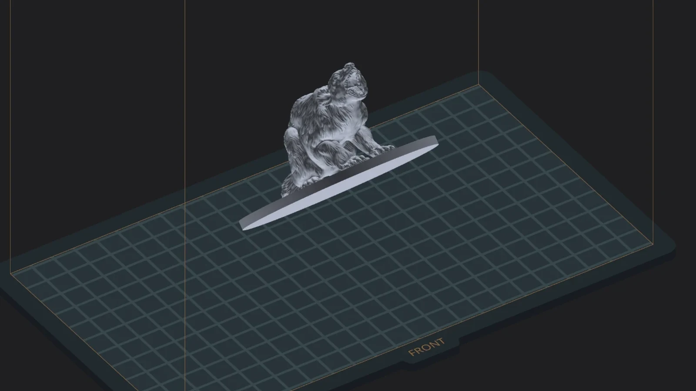
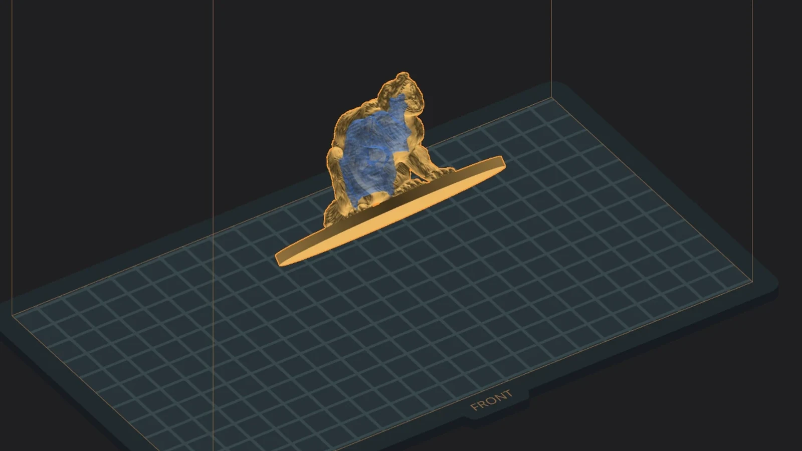
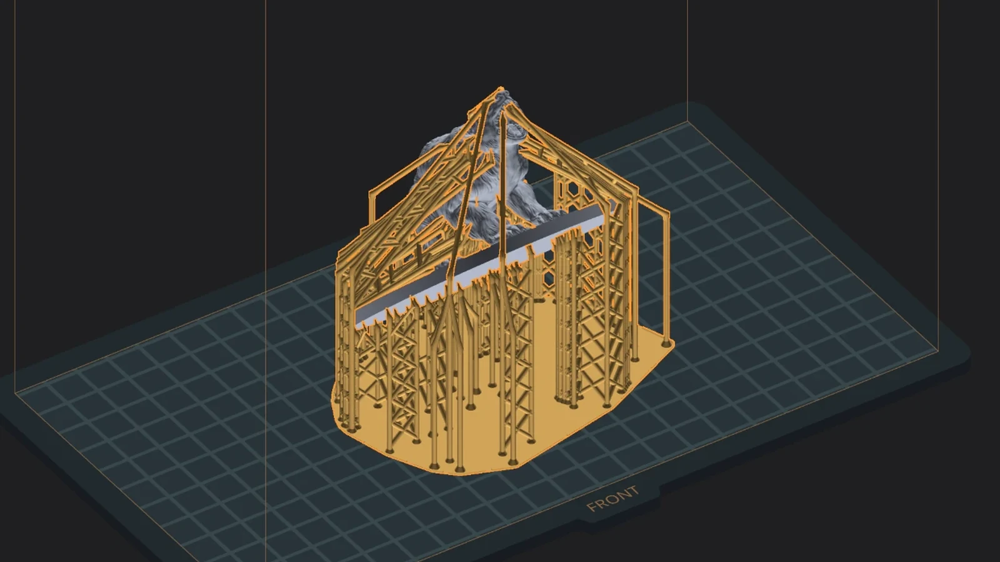
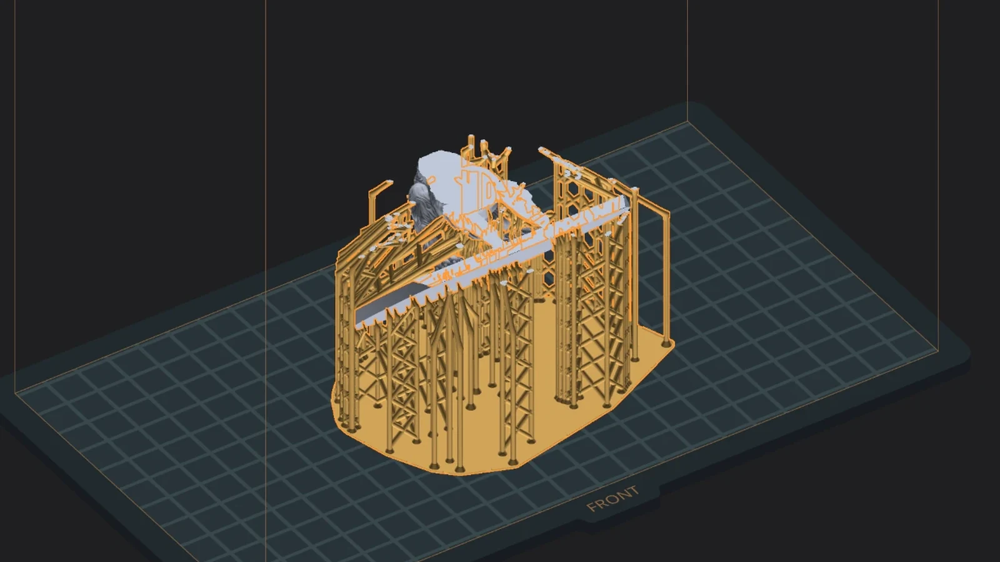
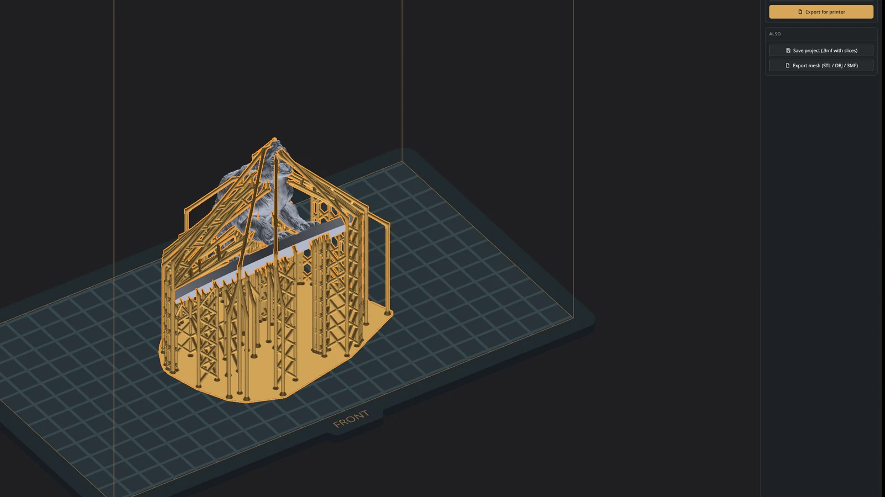

TransformHollowSupportsSliceExport
Breadslicer





One real run, measured
you waited 0.00 s
- 0.56 sWindow ready
- 0.39 sOpened wolverine-breadslicer.stl92 MB · 1.9 M triangles
- 0.87 sLive cavity previewwall 2 mm
- 1.7 sBackground: model scanned for supportswhile you look at the cavity
- 3.2 sBackground: supports generated aheadready before you ask
- 0.15 sGenerate → supports on screentaken from the run made ahead
- 0.66 s991 layers sliced1 h 49 m · 62.6 ml · 81.3 g
- 0.12 sPrinter file written.ctb · 26.9 MB · Saturn 3 Ultra
01 · Transform
Move it like you mean it.
Press G, R or S and drag. A live chip reads distance or degrees as you go, and axis guide lines keep you honest. Or type it in the numeric inspector: position, lift, rotation, size.
0.39 s to open a 92 MB, 1.9-million-triangle miniature
02 · Hollow
Save resin without guessing.
A translucent cavity preview that follows the wall slider live, a Recommended thickness one click away, fine ±0.1 and ±1 mm steps, and drain holes before or after.
0.87 s for the live cavity. Meanwhile the supports are being made in the background.
03 · Supports
Hold it up, by hand or in one click.
Trunks, branches, leaves, braces and rafts, prepared in the background while you worked, so Generate is often instant. Add with A, remove with X, with a live preview before every click.
0.15 s from Generate to the supports on screen: they were ready before the click
04 · Slice
Read every layer before the printer does.
Print time, resin and weight. Then a split view that zooms to 32× with crisp, honest pixels. Sealed cavities slice correctly: what you see is what gets exposed.
0.66 s to slice 991 layers
05 · Export
Write the file. Go print.
The file your printer reads, written before you can blink: every layer is encoded on every core, and the bytes are the same as a careful one-layer-at-a-time write. Your project keeps its state, so a last-minute fix is one tab away.
0.12 s to write the 26.9 MB printer file, every layer encoded on every core